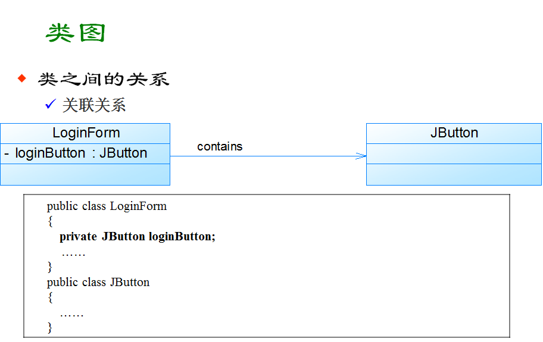
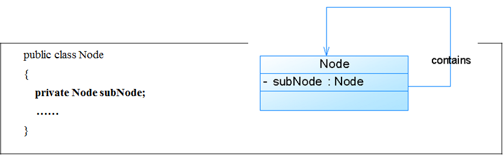
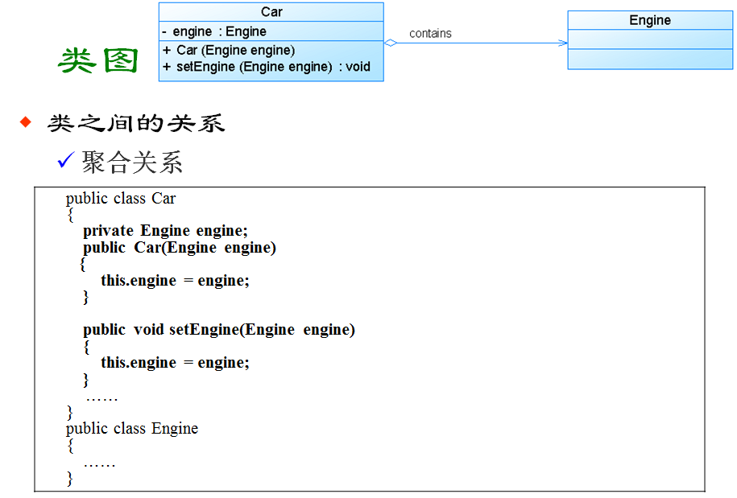
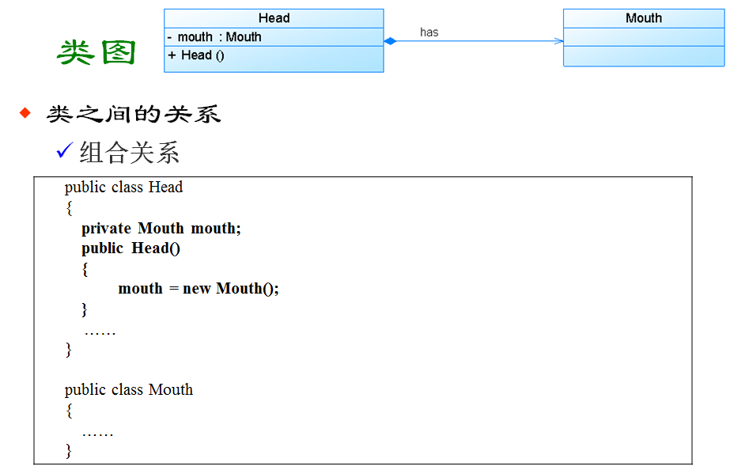
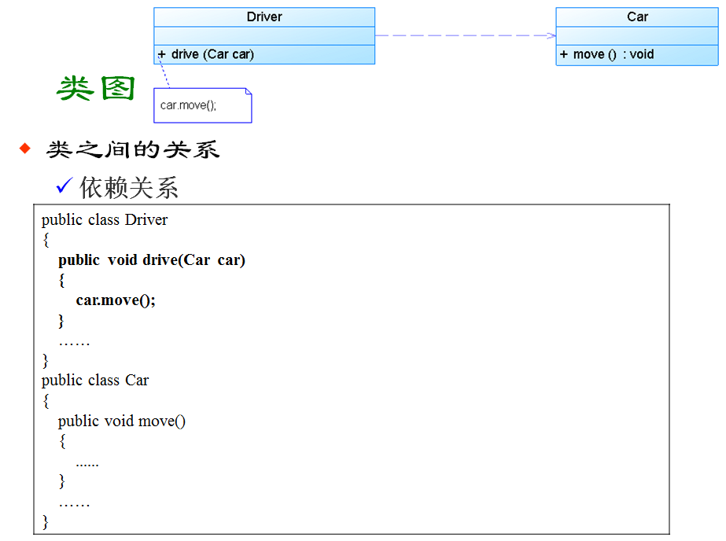
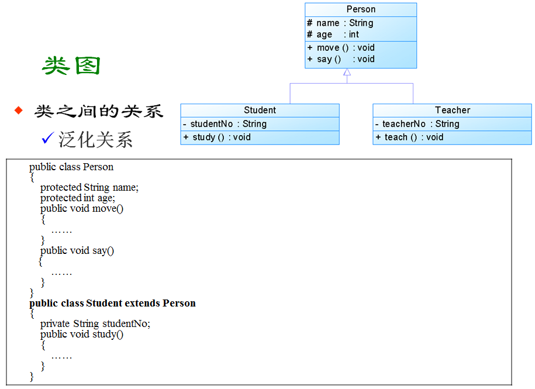

个人速记区分相应区别:
A. 关联 -- 为被关联类B以类属性的形式出现在关联类A中，也可能是关联类A引用了一个类型为被关联类B的全局变量. 实线箭头
B. 依赖 -- 为类B作为参数被类A在某个method方法中使用. 虚线箭头
C. 聚合 -- 关联关系的一种特例. 表现在代码层面，和关联关系是一致的，只能从语义级别来区分. 实线空心菱形.
D. 组合 -- 关联关系的一种特例. 表现在代码层面，和关联关系是一致的，只能从语义级别来区分. 实线实心菱形.
各种UML图示示例.1. 关联关系. 实线箭头. 变数: 双向则无箭头.

1.1 自关联, 类的属性指向自己. 指向自己..

2. 聚合关系. 菱形组合.

3. 组合关系. 实心菱形. 与聚合不同之处在于, 同生共死的生命周期.

4.依赖关系.
代表一种使用关系. 表现为依赖者 使用被依赖者作为方法的一个输入参数.
虚线箭头, 与实现箭头关联关系不同, 人家是整个类作为成员变量.

5. 泛化的关系.
具体就是继承. 空心三角实线. 类与接口则采用虚线空心三角.
